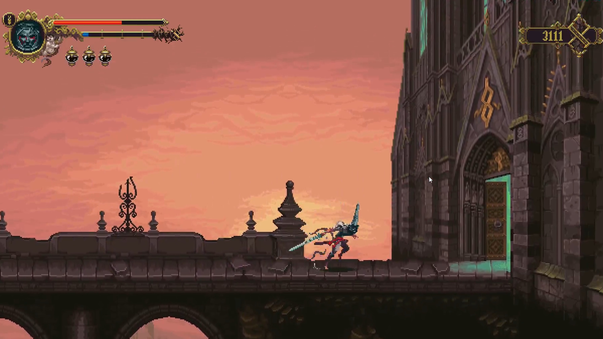
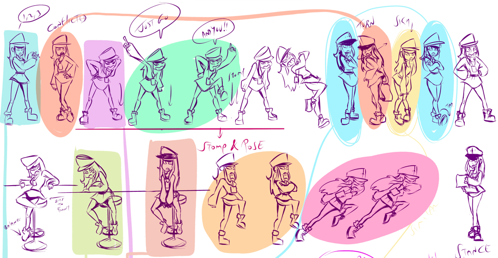
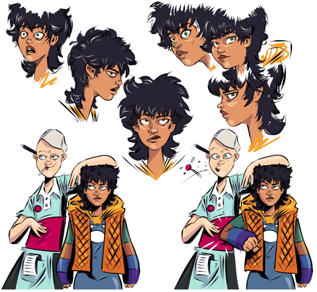
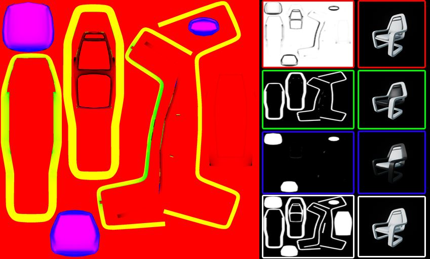
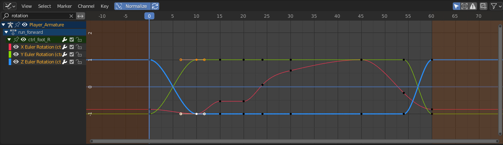
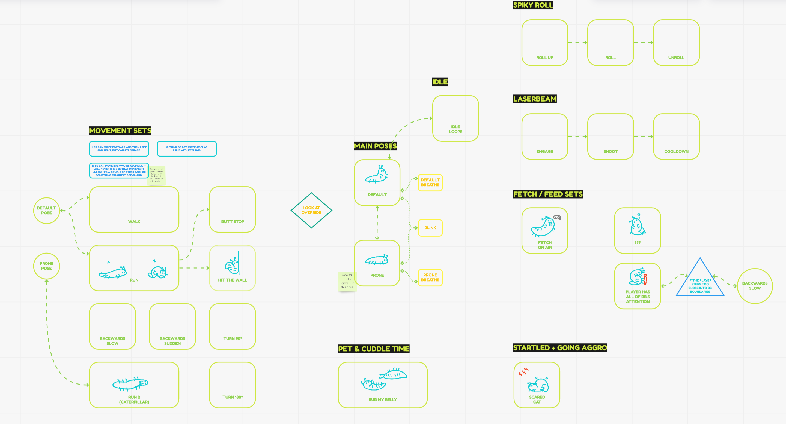

SAPS DIBUIXAR,
I ARA QUÈ? – ✨
Els coneixements tècnics de l'art en videojocs.
Casilda de Zulueta | gatdesoia.es/talks/tech-in-art-ca
SAGA Saló del Gaming | 1-3 desembre 2023
I JO QUI SÓC?
- Casilda de Zulueta (Casi).
- El meu treball:
- Senior Technical Artist & Animator at Monokel.
- 3D Art Lead, Technical Artist, Animator for Mars Vice.
- Desenvolupadora independent:
- Professora d'animació.
- Co-organitzadora del #FemDevsMeetup üíö
- (no confondre amb FemDevs üíú).

Em pregunteu per enganxines després.
EDUCACIÓ

El primer i últim quadre religiós que mai faré.
- Grau en Comunicaci√≥ Audiovisual üìº
- Universitat Politècnica de València.
- Intercanvi Erasmus ✈️
- Köln International School of Design.
- Game Development & Research M.A. üëæ
- Cologne Game Lab.
CARRERA PROFESSIONAL
- Encàrrecs xicotets com a estudiant:
- Molt variat.
- Malament pagat, o sense cap remuneració.
- Empleada a temps complet:
- Artista 3D (generalista).
- Edició de vídeo, comunicació en xarxes...
- Autònoma:
- Primer com a artista 3D.
- Després especialitzada.
- Cada any puje +50 EUR el preu per dia.
- Professora:
- La privada paga prou pitjor que la pública.

Enclosed Encounter (en desenvolupament). Fantastic Foe.
TAMBÉ FAIG COSES PERQUÈ SÍ
Vaig fer com deu d'aquestos.
- Art 3D.
- Il·lustracions.
- Vídeos.
- Disseny web.
- Videojocs.
Si em deixes a soles, tansols faig jocs opressius i depriments. Potser siga el temps.


üåπüåπüåπüåπüåπüåπüåπüåπüåπüåπüåπüåπüåπ
gatdesoia.itch.io/13-rosas


EL PROPÒSIT
D'AQUESTA XERRADA
- Assenyalar els principals aspectes tècnics de l'art per a videojocs...
- ... i fer-vos considerar mantindre una bona metodologia en els vostres processos artístics.
- Enrecordar-vos de que el vostre valor com a persona no depén de la vostra productivitat, que vos mereixeu descansar i fer coses simplement per a vosaltres, i que treballar hores extra es una m****.
PREGUNTA #1:
QUIN TIPUS D'ARTISTES SOU?
- Concepte.
- 2D.
- 3D.
- UI.
- Altra.
- No m'interessa.
EL PROPÒSIT
DEL VOSTRE TREBALL
- Comunicar-vos amb una audiència.
- Comunicar-vos amb una màquina.
L'*ART* ÉS PER A QUE L'AUDIÈNCIA TROBE SENTIT
- És atractiu.
- És fastigós.
- Té pinxos, per tant sabré que em faré mal si el toque.
- És groc, per tant sabré que puc anar per enllà/que n'hi ha un tressor amagat/que puc trencar la caixa i obtindre munició.

Mirror's Edge (2008) DICE.
L'ASSET ÉS PER A QUE LA MÀQUINA L'INTERPRETE (RENDER)
- El dispositiu objectiu (target device) restringirà quánts polígons podeu usar, el tamany dels atles, els FX disponibles, l'espai de color.
- El POV i tamany de pantalla limita el nivell de detall.
- Com més grans els vostres arxius, més espai ocuparà el vostre joc.
- L'artista és responsable del seu asset.

League of Legends (2009-2023) Riot Games.
PREGUNTEU-VOS:
PER A QUÈ ESTIC FENT AIXÒ?
- Estic fent aquesta cadira per a que el PJ puga asseure's.
- Estic reutilitzant el material de la taula perquè són del mateix kit.
- Estic fent l'altura del seient amb la mesura universal d'aquest joc.
- Estic ficant les coordinades del pivot a una distància constant del front.
- Estic mantenint el polycount molt baixet per a que es puga renderitzar 100 cadires en mòbils de 7 anys.

Això ÉS una cadira.
LA TÈCNICA
DARRERE
L'ART
NAMING CONVENTIONS?
- chair_FINAL.fbx
- chair_FINAL-02.fbx
- Cube.007
- assets-34.blend
- wood.png
NAMING CONVENTIONS
- Chair 03.fbx
- Chair 03
- Furniture.blend
- Wood 07.png
- SM_Chair_03.fbx
- SM_Chair_03
- SM_Furniture_01.blend
- D_Wood_07.png
- English as development language.
- Recommended Asset Naming Conventions (Unreal Engine).
FOLDER STRUCTURES?
- Animations
- Character
- props
- Assets
- Character
- Animation
- Textures
- New Folder
- texture
FOLDER STRUCTURES
- Visuals
- Characters
- Animations
- NPCs
- Materials
- Textures
- Materials
- Player
- Materials
- Textures
- Materials
- Characters
- Environment
- Architecture
- Materials
- Textures
- Props
- Materials
- Textures
- Terrain
- Materials
- Textures
- UI
- Materials
- Textures
- Materials
ASSET LIST
| Asset | Working File | Type | Material |
|---|---|---|---|
| SM_Chair_01 | SM_Furniture_01 | seat | M_Wood_02 |
| SM_Chair_02 | SM_Furniture_01 | seat | M_Wood_03 |
| SM_Chair_03 | SM_Furniture_01 | seat | M_Wood_07 |
EMMAGATZEMATGE EN EL NÚVOL
- Fitxers editables (.blend, .ma, .psd, .afdesign, .spp).
- Els arxius locals i al núvol estan sincronitzats.
- Els arxius sense utilitzar no ocupen espai local.
- Totes les modificacions es poden recuperar (màx. 30 dies normalment).
- Google Drive, NextCloud, OneDrive, Dropbox, Sync, OwnCloud...
APRENEU CONTROL DE VERSIONS
- Fitxers de projecte (qualsevol cosa que fiqueu al motor).
- La versió vostra és només local fins que confirmeu els canvis per a sincronitzar-los al núvol.
- Tots els canvis es poden recuperar.
- COMMIT / PULL / PUSH
- Github Desktop, Sourcetree, Plastic SCM...
PIPELINE

CONCEPT ART
CONCEPT ART
- Number your concepts:
- "I like #3, but make it rounder like #7."
- Name your layers and groups:
- Ah, yes, Ebene 24, that's what I was looking for.
- Keep proportions feasible all views.

CONCEPT ART

CONCEPT ART
- Using references is mandatory:
- Creativity comes from ensambling and restructuring your understanding of how things work.
- Without references, stereotypes and unconscious biases take over.

Blasphemous (2019) The Game Kitchen.
CHARACTER CONCEPT ART
- A character's gotta move:
- Do the joints make sense?
- Can they bend knees or elbows with that piece of armour?
- Concept extreme face and body expressions.

TBA (work in progress) Spoondrift Games.

PROPS & ENVIRONMENT CONCEPT ART
- Learn technical drawing.
- Don't fear "cheating". Use all the tools at your disposal:
- Blockout environments in Blender, place a camera and trace on top of a render.
- In principle, "AI" images don't help speed up good concept art and are full of biases.
2D ART
RESOLUTION
- All images must have a size of power of 2:
- 2, 4, 8, 16, 32, 64, 128, 256, 512, 1024, 2048, 4096, 8192
- They don't have to be square:
- E.g.: 128 x 32, 256 x 16

RESOLUTION
- It can be an individual asset...
- ... or a collection of assets arranged into an atlas.
- You may have heard of trim sheets.

Trim sheets by Blender Bros (found in blendermarket.com).
RESOLUTION
- It has to be big enough to not scale up in game.
- Otherwise the image blurs*.
- It has to be small enough to not eat up resources rendering.
- * Pixel art has the advantage of storing tiny assets.
REUSABILITY

Super Mario Bros. (1985) Nintendo.
3D ART
MODELING
SCALE

Final Fantasy XV (2016) Square Enix.

Spyro the Dragon (1998) Insomniac Games.
SCALE
- The problem with tiny triangles:
- The computer still has to calculate the position of all those triangles, just for a single pixel (or none!) to render.
- When there are too many tiny triangles the render is edgy and flickers.
LODs
Geometry Best Practices for Artists by Arm Developer.
- Meshes:
- Solves tiny triangles waste.
- Textures (mipmaps):
- Solves aliasing issues and Moiré patterns.
- Bones & framerate:
- Solves having too many skinned meshes (like characters) in frame.
- QUANTITY: The more assets to load, the heavier the program is going to be on the memory.
- SIZE: The more triangles there need to be rendered, the bigger the textures, and the more skinned meshes there are, the heavier it will be on the GPU.
MODULARITY
- Document and apply strict measurements:
- How high is the seat of a chair for the character to sit down?
- What's the measure of the narrowest corridor the character should go through?
- How tall is a wall?

Skyrim (2011) Bethesda Game Studios.
VISIBILITY
- If a fraction of a mesh is visible, the whole mesh is being calculated.
- And if there is no occlusion culling system in place, even objects in frame hidden behind another object will still be computed.
- How much should I chop a house?
- Are you going to be close to it? Chop it!
- Is it a figure in the landscape far away? Make it a quad and slap a texture on it.
MATERIALS & TEXTURES
TEXTURE SIZE
- The smaller, the better.
- The less textures per material, the better:
- Diffuse map: RGB(A)
- PBR map: RGBA
- Normal map: RGB

UV SPACE
- Two UV maps:
- Main UVmap.
- Lightmap.
- The unwraps can't coincide.
MATERIAL INSTANCES
- The fewer materials, the better. Yet you need to balance:
- Big atlases with tons of assets using the same material.
- Small texture maps, with more materials in a scene.
- Consider: Tiling and triplanar projections.
- Avoid multimaterial meshes.
- It's better to duplicate and flip a quad than to force double-side render
EXPORTING
APPLY TRANSFORMS
- Rotation at 0,0,0.
- Scale at 1,1,1.
PUT YOUR PIVOT POINTS
WHERE I CAN SEE THEM
- The pivot point belongs:
- ... to the bottom left corner of a wall asset...
- ... to the center of a basket ball...
- ... to the center of the rotation point of a door, and it's aligned with the main rotation axis...
- ... between the feet of a biped, coinciding with the pivot of the skeleton.

It is time you watch the Dollars Trilogy.
EXPORTING SETTINGS
- Blender to Unity:
- Rotate the mesh on X -90°. Apply.
- Rotate on X 90°. Do not apply this transform.
- Apply Scalings: FBX Units Scale.
- Forward: -Y Forward.
- Up: Z Up.
- Blender to Unreal:
- Project must have a Unit Scale of 0.01.
- Forward: Y Forward.
- Up: Z Up.
- Asset Creation Toolset.
ANIMATION
RIGGING
BONES MAIN ROLL

EULER VS. QUATERNIONS
- Euler (X,Y,Z).
- 6 combinations: XYZ, XZY, YXZ, YZX, ZXY, ZYX. To avoid gimbal lock, select:
- #1: most important.
- #2: least important.
- #3: middle ground.
- Quaternions (X,Y,Z,W):
- < 180°.
- Avoids gimbal lock.

CONTROLLERS AND DRIVERS ARE
YOUR ANIMATOR'S FRIENDS
- Automate:
- Legs rotation with IK feet.
- Closing hand with different increments on each finger bone.
- Key shapes.
ANIMATION
DESIGN A STATE MACHINE
BLOCKOUT BEFORE YOU POLISH

SLICE ON DEMAND